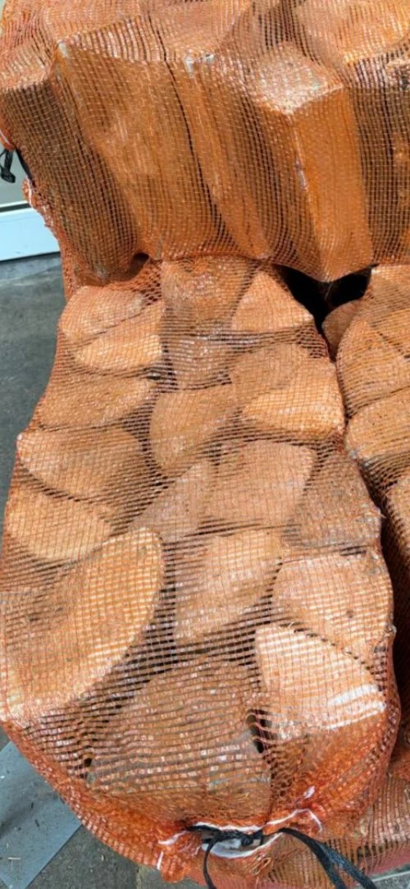
Logs
XL kiln dried ash
40 litre net
A generous net of premium kiln dried ash.
£10.00per net
THE FIREWOOD COLLECTION
From convenient nets to season-ready bulk bags, find your fireside essentials.
Prices are based on the supplier's published listings. Your final price, stock and delivery will be confirmed in response to your enquiry. Bulk bags are sold by approximate volume, not a guaranteed tonne weight.
18 products

40 litre net
A generous net of premium kiln dried ash.

Approx. 1 m³ bulk bag
An ash, birch and oak mix for a well-stocked log store.
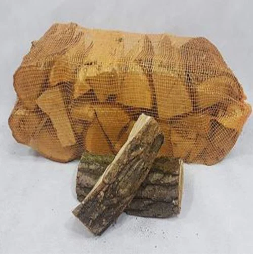
40 litre net
Premium oak logs in a convenient XL net.
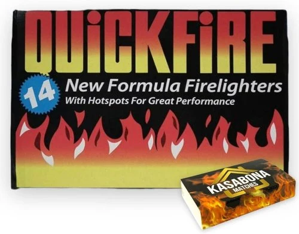
Each
A simple addition to your fireside essentials.
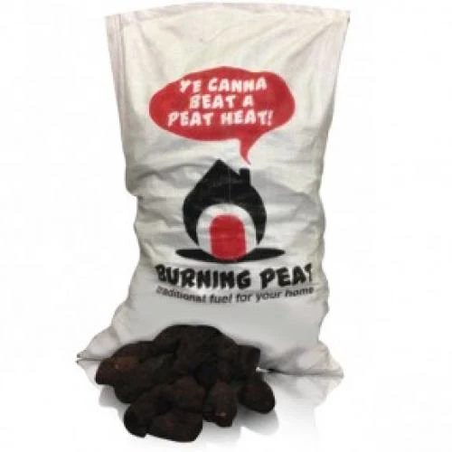
20 kg bag
Peat fuel. Check suitability for your appliance and location.
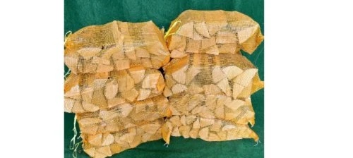
40 litre net
Premium kiln dried birch in an XL net.
Approx. 1 m³ bulk bag
Bulk kiln dried oak for your firewood supply.
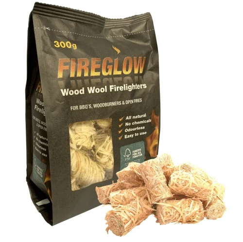
Per bag
Woodwool firelighters to help get your fire started.
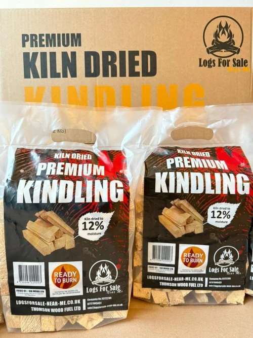
Per bag
Prepare your fire with dry, easy-to-handle kindling.
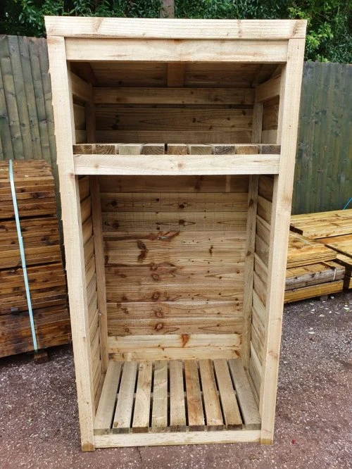
72″ H × 33″ W × 21″ D
A dedicated space to keep your firewood neatly organised.
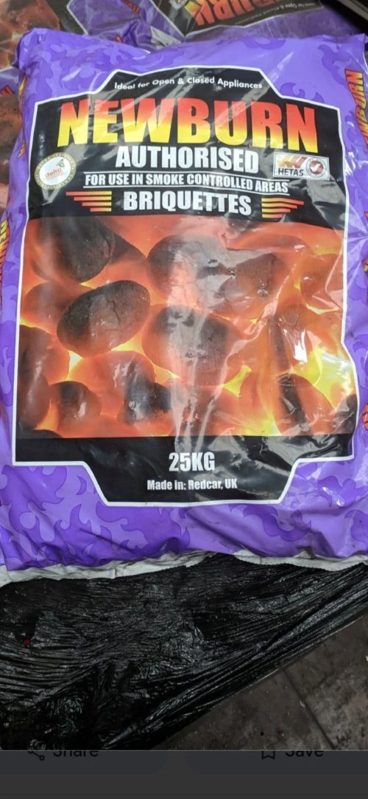
25 kg bag
Smokeless fuel. Confirm the exact fuel and appliance suitability before ordering.
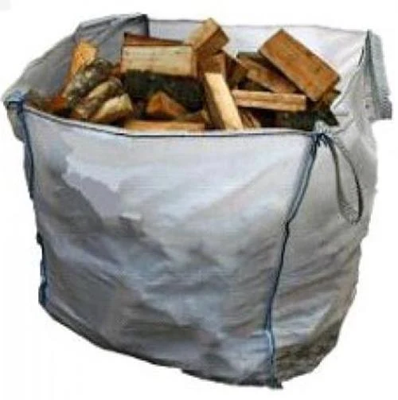
Approx. 1 m³ bulk bag
A premium mix of ash and birch logs.
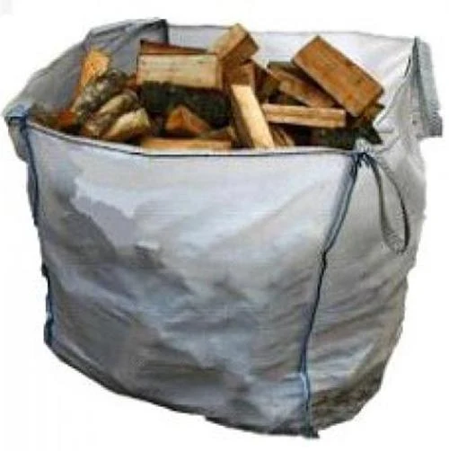
Approx. 1 m³ bulk bag
Premium ash logs supplied in a bulk bag.
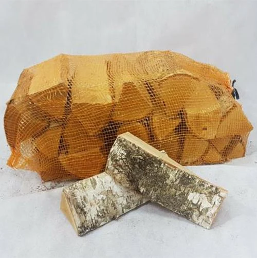
Standard net
A practical net of premium kiln dried birch.
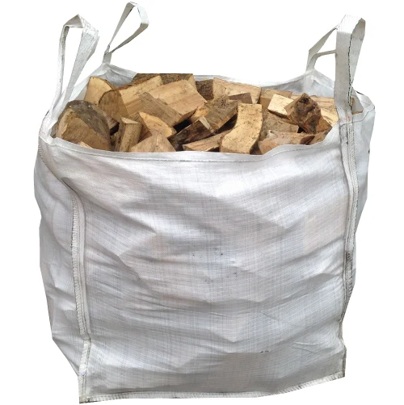
Approx. 1 m³ bulk bag
Premium birch logs in a bulk format.
30 litre net
Premium ash in a smaller net.
Illustrative product photo; packaging may differ.
Out of stock
Approx. 1 m³ bulk bag
Seasoned firewood in a bulk bag. Confirm current moisture specification with the supplier.
Illustrative product photo; packaging may differ.
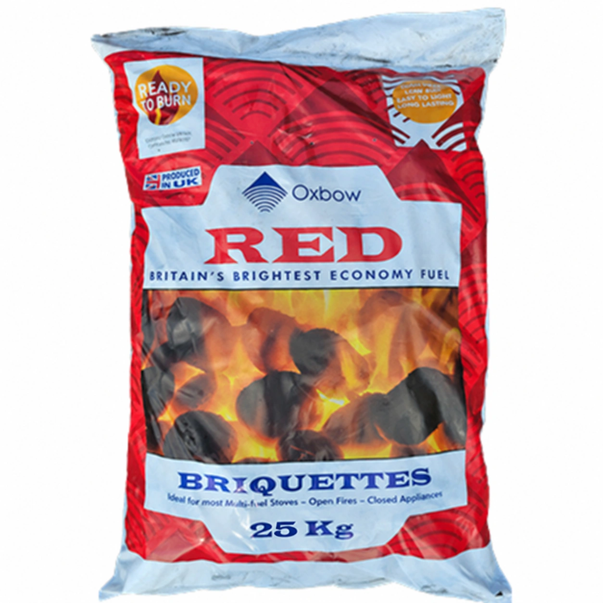
25 kg bag
Oxbow Red briquettes in a 25 kg bag. Check suitability for your appliance before ordering.
Illustrative product photo; packaging may differ.
Have another question? We're always happy to help you choose.
Ask the team ↗Nets are easy to handle and suit smaller storage spaces. Bulk bags are convenient for larger supplies, but need vehicle access to the drop-off point. Check the listed volume for each product.
Keep logs sheltered from rain, raised off the ground and well ventilated. Store only what fits safely in your available space.
The existing supplier advertises free local delivery, with a minimum of 20 nets for net orders. We'll confirm eligibility, any delivery charge and access requirements when responding to your enquiry.
Follow your appliance manufacturer's guidance and the requirements for your location. Ask us to confirm the exact solid fuel before ordering. A smokeless description alone does not establish suitability for every appliance.
Find your firewood, build your basket and leave the delivery details to us.